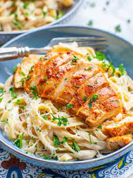

Chicken Lasagna Recipe

Chicken alfredo combines a creamy pasta sauce with tender slices of lean protein. The white meat is butterflied for quick cooking and seasoned for maximum flavor. The heavy cream reduces until a smooth and velvety sauce is able to cling to the fettuccine noodles.
- Milk
- Chicken
- Cheese
- Noodles
- Fettuccine
- Tomatoes
- Panko bread crumbs
- If you're looking for a richer sauce, substitute heavy cream or half and half for the milk—never a bad move.
- Big fan of dark meat? Swap in thighs for breasts! Just make sure you give them ample cooking time. Thighs take much longer in the pan, and actually cook best with a quick trip to the oven. Our garlic butter baked chicken thighs utilize this technique, and they're BOMB
- Get experimental with the noodles: fettuccini is a classic, but angel hair or spaghetti would work just fine! Just make sure whatever pasta you choose can be completely submerged in your cooking liquid.
- Feel like you need some veg? Stir in a couple big handfuls of spinach and some halved grape tomatoes after the pasta is cooked.
- If you're missing crunch, toast up some panko bread crumbs in a skillet with butter and garnish with a handful. This trick works for any pasta, the added texture really takes it over the top.